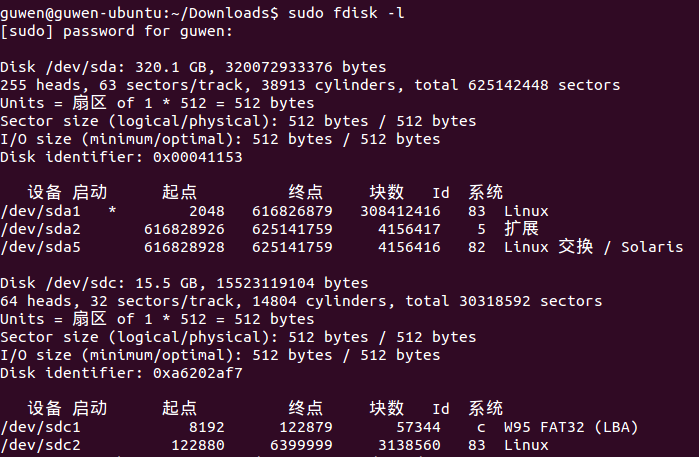
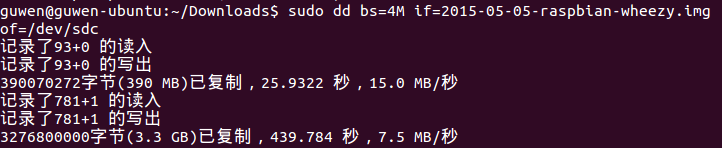

Ubuntu烧录树莓派镜像
1.查看TF的设备名
1 | sudo fdisk -l |

2.将镜像烧录至SD卡
1 | sudo dd bs=4M if=2015-05-05-wheezy-raspbian.img of=/dev/sdb |

| 参数 | 含义 | 备注 |
|---|---|---|
| bs | blocksize的缩写，表示一次写入多大的块 | 4M一般都没问题，如果不行，试试改成1M |
| if | input file缩写，表示镜像的路径 | $12 |
| of | output file的缩写 ，表示设备名 | Linux上一切都是文件 |
备注：因为dd命令没有进度显示，所以看上去可能感觉假死了，此时只要等待几分钟即可。